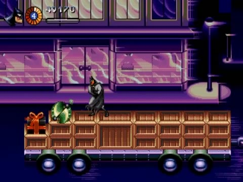
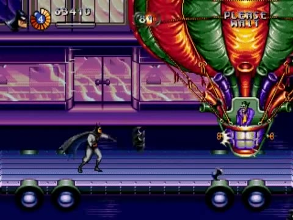
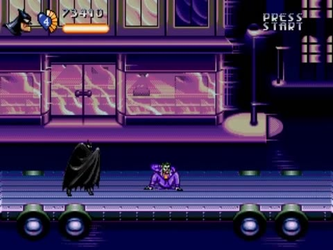
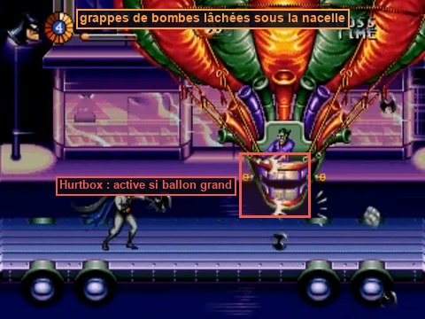
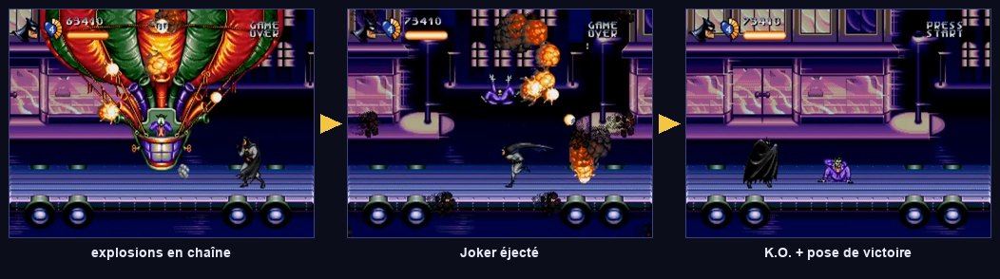

Section 3 : convoi & montgolfière du Joker
Une rue qui file à toute vitesse, des camions qui se rapprochent et s'écartent, des ballons-mines, puis le Joker dans sa montgolfière à nacelle-sourire, qui fond sur Batman depuis le fond de l'écran.



Le convoi : la vitesse sans bouger

Faire réellement rouler des camions à 200 km/h en suivant le joueur compliquerait tout : caméra, ennemis, projectiles. On inverse le point de vue : le convoi est immobile dans le monde, et c'est la rue qui défile derrière lui (Parallax2D.autoscroll). Le joueur ne voit aucune différence ; le code, lui, reste celui d'un niveau normal. Sur Mega Drive, c'est exactement pareil : le « mouvement » n'est qu'une valeur de défilement du plan de fond.
S3Convoy (Node2D, section.gd) next_scene = res://screens/level_end.tscn ├── Street (Parallax2D) autoscroll = (-300, 0) · repeat_size = largeur · vitrines, réverbères ├── Road (Parallax2D) autoscroll = (-420, 0) · marquages au sol, plus rapides (plus proches) ├── World │ ├── Convoy (Node2D) │ │ ├── Truck1 (convoy_vehicle.tscn) plateau chargé de caisses │ │ ├── Van1 (convoy_vehicle.tscn) fourgon violet │ │ ├── Flatbed1 … plateau nu, voiture de police, etc. │ ├── Gift (Breakable) paquet géant → spawn_enemy = clown │ ├── KillZone (Area2D) sous la chaussée : tomber du convoi │ ├── ArenaBalloons (WaveArena) vagues de BalloonMine, origine « below » │ └── BossArena → JokerBalloon (sur le dernier plateau) ├── EnemyBullets (Pool) · Player · Camera · HUD
Le véhicule : une plateforme mobile

Les écarts entre véhicules varient légèrement (10:50–11:00), les roues tournent, la séquence plateau → fourgon → plateau nu → voiture de police se répète (11:44–12:03).
ConvoyVehicle (AnimatableBody2D, convoy_vehicle.gd) couche 2 « plateformes »
├── Body (Sprite2D) cabine + plateau
├── Cargo (CollisionShape2D …) plateau (one-way) et caisses empilées (pleines)
└── Wheels (Node2D)
├── Wheel1 (Sprite2D) …
AnimatableBody2DC'est le corps physique prévu pour les plateformes déplacées par script ou par animation. Avec sync_to_physics, son déplacement est calculé au même rythme que la physique. Un CharacterBody2D posé dessus reçoit automatiquement sa vitesse (platform velocity) : Batman avance avec le camion sans une ligne de code. C'est l'apport le plus utile du tome 7 de l'ancienne doc B.
Tomber du convoi
La vidéo ne montre aucune chute. On suppose qu'elle est mortelle, comme dans la plupart des run & gun. Si tu préfères être indulgent, replace plutôt Batman sur le véhicule le plus proche avec un peu de dégâts.
Les vagues de ballons-mines
Une WaveArena dont les vagues ne contiennent que balloon_mine.tscn, avec origins = ["below", "right"], max_alive = 8, spawn_interval = 0,4 et un quota de 14 à 18. Les mines montent en oscillant ; Batman doit tirer en diagonale haute et à la verticale, ou les éviter. Une bonne occasion de placer un crâne (12:24).
Le boss : la montgolfière du Joker

- Chaque « passage » : entrée par un bord, petite et haute ; grossit en descendant vers le plateau ; traverse ; sort par l'autre bord, puis quelques secondes d'écran vide (13:59–14:04).
- Certains passages sont géants (enveloppe sur la moitié de l'écran, 13:22), d'autres restent moyens.
- Grappes de petites bombes noires lâchées en ligne ou en colonne, qui rebondissent.
- Flash pastel de tout le ballon quand il est touché.
- La vitalité baisse surtout quand le ballon est grand, donc proche.
Ce n'est ni un dirigeable en rotation pseudo-Mode 7, ni un « ballon de parade » à Jack-in-the-box, dentiers et gaz hilarant (doc A), ni un dirigeable à laser (doc B). C'est une montgolfière dont l'effet principal est le changement de taille : on simule l'approche dans la profondeur.
Un seul paramètre, la taille apparente, raconte toute la 3D : petit = loin, grand = près. On le pilote par une courbe en cloche, sin(u × π), qui monte de 0 à 1 puis redescend pendant le passage. La même valeur commande la taille, la hauteur (le ballon descend en approchant) et la vulnérabilité : on ne peut le toucher que lorsqu'il est assez proche. Comme sur Mega Drive, la taille est arrondie à des paliers (Fx.snap_scale, tome 06).
JokerBalloon (Node2D, joker_balloon.gd) score_value = 10000 · origine = centre du plateau ├── Health max_health = 120 (À CALIBRER) ├── Visual (Node2D) matériau hit_flash ; enfants en « use_parent_material » │ ├── Envelope (Sprite2D) enveloppe rouge, orange et verte │ ├── Basket (Sprite2D) nacelle-sourire + Joker │ ├── Hurtbox couche 6 · health = ../../Health · sur la nacelle │ │ └── CollisionShape2D │ └── DropPoint (Marker2D) sous la nacelle ├── JokerFigure (Sprite2D, caché) le Joker éjecté └── HitFlash target = Visual · amount = 0.55
D'autres descriptions du jeu évoquent une montgolfière qui rebondit au sol et charge à l'horizontale. Ces attaques n'apparaissent pas de 13:04 à 14:36. Si tu les vois dans un émulateur, ajoute un état CHARGE : échelle fixée à 1, y = low_y, traversée rapide (1,5 s) et Hurtbox active. C'est un bon exercice pour vérifier que tu maîtrises la machine à états.
L'arène du Joker


- Le dernier véhicule est un plateau nu (
drift_amplitude= 0) : un sol stable et dégagé (13:00). - La
BossArenafige la caméra au centre du plateau ; la rue continue de défiler derrière grâce à l'autoscroll. JokerBalloonest placé à la surface du plateau, au centre : toutes ses coordonnées (high_y,low_y) sont relatives à ce point.- Score : +10 000 (14:30).
next_scenepointe vers l'écran de fin de niveau (Batmobile, tome 10).
- La rue défile en continu ; Batman saute de camion en camion, emporté par leur mouvement ; les écarts varient.
- Des ballons-mines montent du bas en oscillant ; un paquet géant libère un sbire.
- La montgolfière entre petite et haute, grossit par paliers en descendant, lâche des grappes de bombes, ressort ; elle n'est vulnérable que lorsqu'elle est grande.
- Chaque coup déclenche un flash pastel. À 00 : explosions en chaîne, Joker éjecté et assommé, pose de victoire, +10 000.